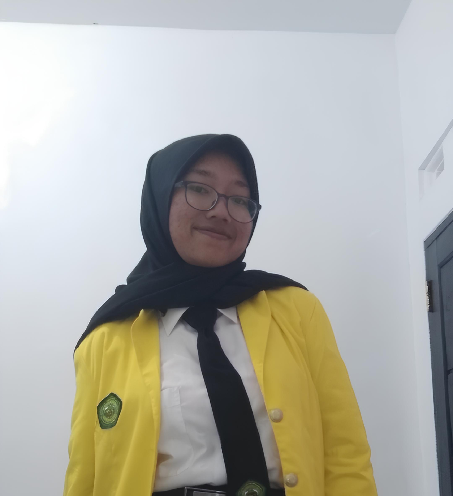

Yogi Nugraha
247006111067

Aisyah Nitiarahma
247006111073
Granyda adalah website yang berfungsi membantu pengguna untuk belajar fungsi dan membuat grafik fungsi dalam matematika dengan mudah dan cepat. Website ini dibuat oleh beberapa mahasiswa/i program studi Informatika Universitas Siliwangi. Tujuan dibuatnya website ini adalah untuk memenuhi tugas akhir semester satu mata kuliah Kalkulus I.